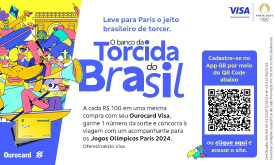
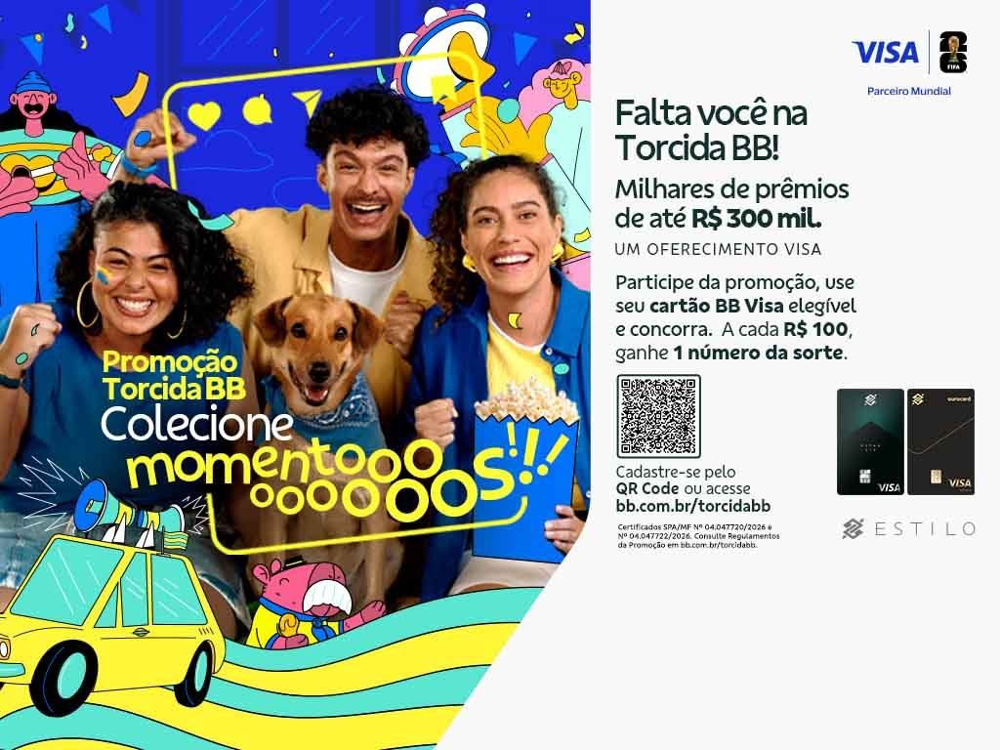
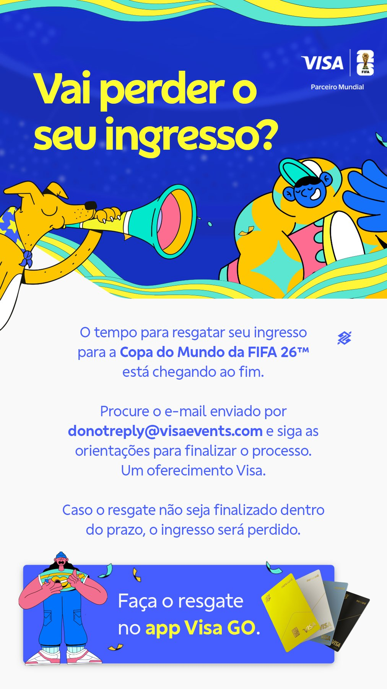

Versão varejo do formato quadrado, Paris 2024.
O key visual precisava atender quatro públicos (varejo, alta renda, pessoa física e empresas) em formatos que iam de banner de site a card de WhatsApp. Tudo para dois dias.
Tratei o volume como um problema de design. Os arquivos-mestre deixavam trocar rápido o cartão, a oferta e a chamada, e as peças foram agrupadas por formato e data de entrega.
Mais de 50 peças saíram em 48 horas e foram aprovadas só com ajustes de texto. A campanha rodou no digital e em mídia exterior.
Paris 2024, formato por formato
Banners em 550 × 330, posts quadrados, stories verticais e cards de WhatsApp com QR code, cada um ajustado ao seu público.



Dois dias, três decisões
Entender o key visual
A PILOTO.TV entregou uma festa: o cachorro Caramelo, vuvuzelas e o Arco do Triunfo nas cores da campanha. Descobri quais partes podiam mudar de lugar, diminuir ou sair sem estragar o visual.
02
Montar arquivos para troca
Cada público muda o cartão, a oferta e a chamada. Os arquivos-mestre deixam esses três itens fáceis de trocar.
03
Organizar por entrega
As peças foram agrupadas por formato e ordenadas por prazo, o que manteve o visual consistente mesmo na correria.
De volta na Copa do Mundo 2026
Dois anos depois, a torcida voltou com uma nova promoção. Minha parte foi o design system e a produção das peças para banners de site, e-mail, terminais de autoatendimento e telas de elevador.



